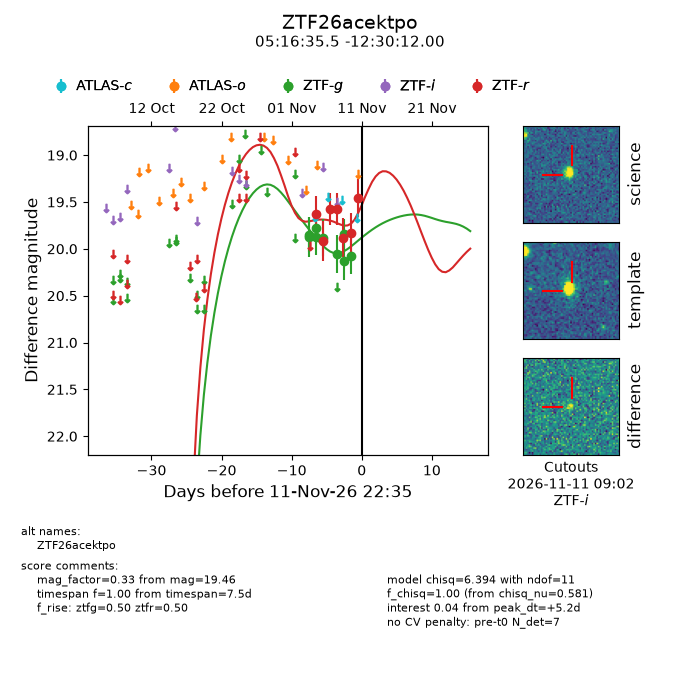
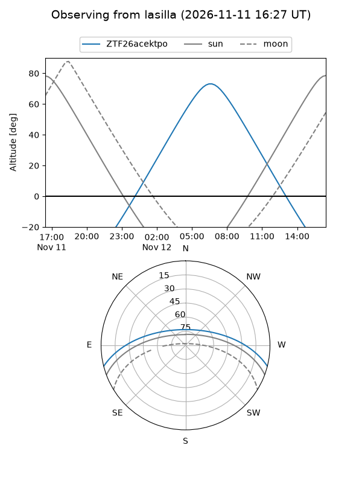
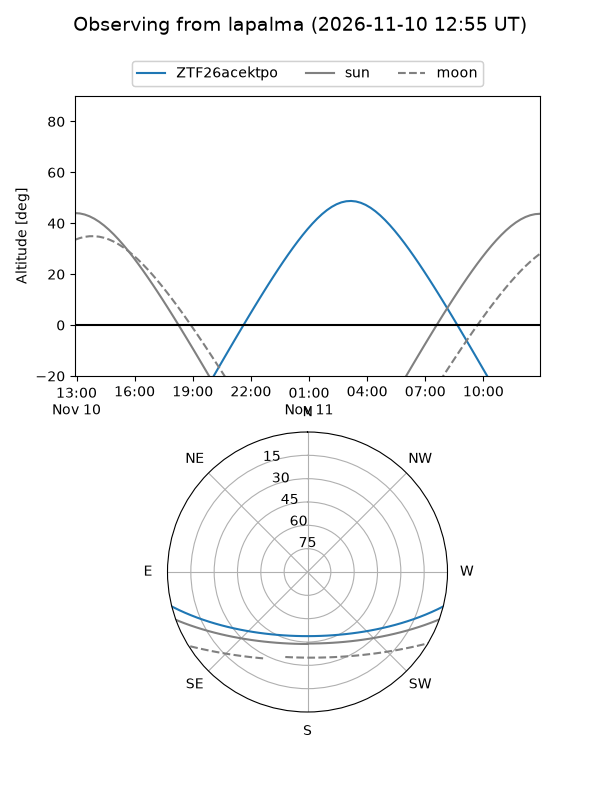
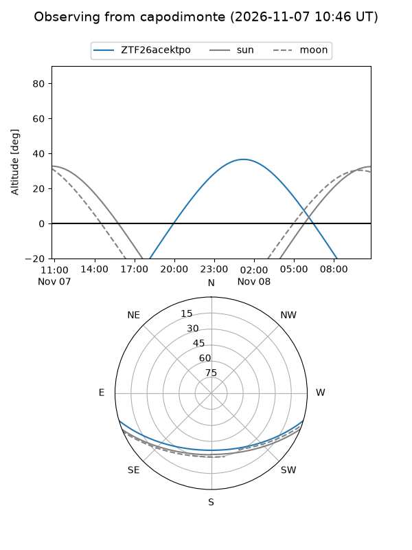
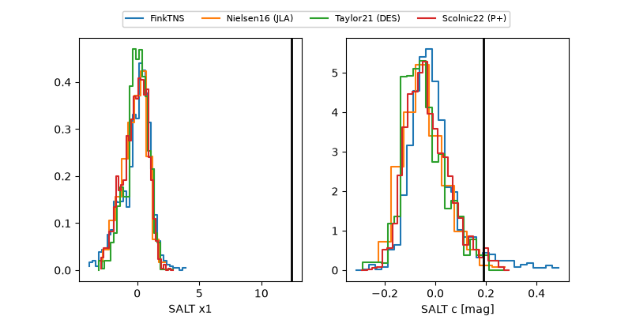

ZTF26acektpo
Target ZTF26acektpo at 2026-11-11 22:37
Aliases and brokers:
FINK-ZTF: ztf.fink-portal.org/ZTF26acektpo
Lasair-ZTF: lasair-ztf.lsst.ac.uk/objects/ZTF26acektpo
ALeRCE-ZTF: alerce.online/object/ZTF26acektpo
Direct TNS query: direct search
alt names
ZTF26acektpo (ztf,fink_ztf)
Coordinates:
equatorial (ra, dec) = 79.1480,-12.50333
equatorial (HMS+DMS) = 05:16:35.52,-12:30:12.00
galactic (l, b) = (213.8076,-26.62329)
Flags:
peak dt: +5.2
Photometry:
last ztfg=20.08, ztfr=19.46
9 ztfg, 7 ztfr detections
Lightcurve

Visibility



Additional plots
